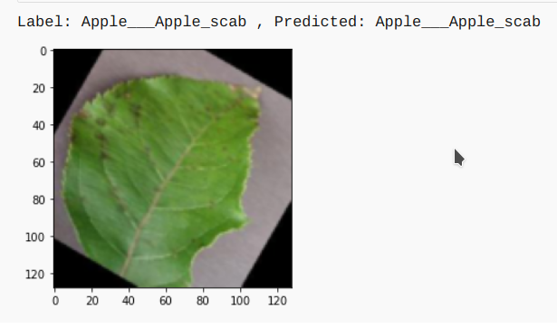

Plant_AI

Description
Food security for billions of people on earth requires minimizing crop damage by timely detection of diseases.Developing methods for detection of plant diseases serves the dual purpose of increasing crop yield and reducing pesticide use without knowing about the proper disease. Along with development of better crop varieties, disease detection is thus paramount goal for achieving food security. The traditional method of disease detection has been to use manual examination by either farmers or experts, which can be time consuming and costly, proving infeasible for millions of small and medium sized farms around the world.
This project is an approach to the development of plant disease recognition model, based on leaf image classification, by the use of deep convolutional networks. The developed model is able to recognize 38 different types of plant diseases out of of 14 different plants with the ability to distinguish plant leaves from their surroundings.
Leaf Image Classification

This process for building a model which can detect the disease assocaited with the leaf image. The key points to be followed are:
-
Data gathering
The dataset taken was “New Plant Diseases Dataset”. It can be downloaded through the link “https://www.kaggle.com/vipoooool/new-plant-diseases-dataset”. It is an Image dataset containing images of different healthy and unhealthy crop leaves.
-
Model building
- I have used pytorch for building the model.
- I used three models:-
- The CNN model architecture consists of CNN Layer, Max Pooling, Flatten a Linear Layers.
- Using Transfer learning VGG16 Architecture.
- Using Transfer learning resnet34 Architecture.
-
Training
The model was trained by using variants of above layers mentioned in model building and by varying hyperparameters. The best model was able to achieve 98.42% of test accuracy.
-
Testing
The model was tested on total 17572 images of 38 classes.
The model used for prediction on sample images. It can be seen below:
-
Various Model Architecture tried along with Learning Rate and Optimizer and various accuracy obtained with different models.
Details about the model
The model will be able to detect 38 types of diseases of 14 Unique plants
- The detail list of plants and diseases can be seen in List
Further Work:
- Implementing Image Localisation to find the excat position of the leaf affected .
- Building Recommender system for recommendation of proper presticides and control method for the disease.
- Implementing the appropriate management strategies like fungicide applications and pesticide applications could lead to early information on crop health and disease detection.This could facilitate the control of diseases and improve productivity.
Usage:
Flask: Code for Flask Server and deploymentTestImages: Sample image for model testingSrc: All The source code for building modelsModels: All the Pretrained Models of Pytorch
This project is Licensed under MIT
To understand the code : You can find the complete explanation to the code in Article
Give a ⭐ if you like this website!